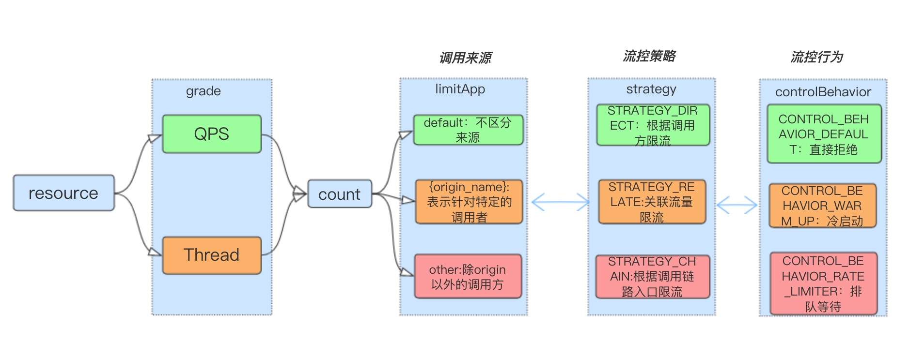
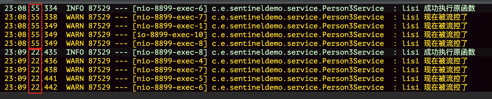

0 前言
流量控制还可以是基于调用关系的流量控制，所谓调用关系包含根据调用方限流，链路限流，关联流量控制
来看下FlowRule的整体流控流程：
推荐一个非常好的讲Sentinel的博文系列：https://www.jianshu.com/c/ffe65aaa2c12，作者逅弈，上图就参考了其中一篇文章https://www.jianshu.com/p/3b8d259666d9
1 根据调用方限流
FlowRule有一个limitApp属性(继承自AbstractRule)，可以用来表示当前设置的限流规则时针对哪一个调用方生效的。在上一篇当中，我们没有设置该值，所以默认为default，表明对所有调用方均生效。
那么如何表示访问当前资源的调用方是谁呢？在访问资源的时候，通过ContextUtil.enter(resourceName, origin) 方法中的 origin 参数标明了调用方身份。
关于limitApp的取值说明摘取官网：
流控规则中的 limitApp 字段用于根据调用来源进行流量控制。该字段的值有以下三种选项，分别对应不同的场景：
- default：表示不区分调用者，来自任何调用者的请求都将进行限流统计。如果这个资源名的调用总和超过了这条规则定义的阈值，则触发限流。
- {some_origin_name}：表示针对特定的调用者，只有来自这个调用者的请求才会进行流量控制。例如 NodeA 配置了一条针对调用者caller1的规则，那么当且仅当来自 caller1 对 NodeA 的请求才会触发流量控制。
- other：表示针对除 {some_origin_name} 以外的其余调用方的流量进行流量控制。例如，资源NodeA配置了一条针对调用者 caller1 的限流规则，同时又配置了一条调用者为 other 的规则，那么任意来自非 caller1 对 NodeA 的调用，都不能超过 other 这条规则定义的阈值。
同一个资源名可以配置多条规则，规则的生效顺序为：{some_origin_name} > other > default
1.1 根据调用方限流示例
(1) 定义规则
1 | static { |
上面表示资源anno有4条规则，如果调用方是lisi那么QPS设置为1，调用方是zhangsan则QPS设置为2；如果调用方是lisi和zhangsan之外的调用方，那么QPS是3
最后default表示不论调用方是谁，anno资源的QPS设置为5，比如同一时刻lisi的QPS为1，zhangsan的QPS为2，其他的QPS为3，各自都没有触发流控，但是anno资源访问的QPS已经是6，超过了default的设置，所以还是会触发流控，触发的是default的流控规则
(2) 设置资源
1 | public Person query(String name) { |
调试发现基于调用方的限流没法使用注解来定义资源，这里使用SphU显式定义资源。最关键的代码是 <1> 处，指明当前访问资源的来源方(limitApp)。这里不写的话，默认不指定来源方。另外建立规则的时候，不设置limitApp，则该条规则即是default规则。
(3) 验证
同样写一个controller方法：
1 |
|
启动客户端，使用工具(jmeter) 1秒 内进行5次访问:
1 | http://localhost:8899/person/query3?name=lisi |
查看客户端日志：

可以看到同一秒内只有1个请求能成功访问资源。
再在1秒 内进行5次访问下面链接
1 | http://localhost:8899/person/query3?name=zhangsan |
最后再来测试调用方是wangwu的情况，wangwu则属于other的规则，所以我们来验证流控QPS是不是3
1 | http://localhost:8899/person/query3?name=wangwu |
1 | rule1.setLimitApp("lisi,wangwu,liuer"); |
另外验证兜底规则，上例中 lisi为1，zhangsan为2，other为3时，各自都没有触发限流，但是兜底规则default是5，所以会有一个请求被限流，测试代码：
1 |
|
2 根据调用链路入口限流：链路限流
根据调用链路入口限流。假设来自入口 Entrance1 和 Entrance2 的请求都调用到了资源 NodeA，Sentinel 允许根据某个入口的统计信息对资源进行限流。
举例来说：可以设置 FlowRule.strategy 为 RuleConstant.CHAIN，同时设置 FlowRule.refResource 为 Entrance1 来表示只有从入口 Entrance1 的调用才会记录到 NodeA 的限流统计当中，而对来自 Entrance2 的调用可以放行。
可以参考官方文档：https://github.com/alibaba/Sentinel/wiki/流量控制#32-根据调用链路入口限流链路限流
3 具有关系的资源流量控制：关联流量控制
根据关联流量限流。当两个资源之间具有资源争抢或者依赖关系的时候，这两个资源便具有了关联，可使用关联限流来避免具有关联关系的资源之间过度的争抢。
比如对数据库同一个字段的读操作和写操作存在争抢，读的速度过高会影响写得速度，写的速度过高会影响读的速度。
举例来说：read_db 和 write_db 这两个资源分别代表数据库读写，我们可以给 read_db 设置限流规则来达到写优先的目的：设置 FlowRule.strategy 为 RuleConstant.STRATEGY_RELATE，同时设置 FlowRule.refResource 为 write_db。这样当写库操作过于频繁时，读数据的请求会被限流。
可以参考官方文档：https://github.com/alibaba/Sentinel/wiki/流量控制#33-具有关系的资源流量控制关联流量控制
4 参考链接
再推一下这个讲Sentinel特别好的系列：https://www.jianshu.com/c/ffe65aaa2c12
博主还有一个公众号：逅弈逐码